Speciální pøedmìty
| 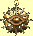 | Jméno: | Clankerùv amulet |
| (Achymie +15) Tento amulet, mocný nástroj alchymistù, je klíèem ke Clankerovu úspìchu. | ||
| Cena: | 15000 | |
| 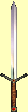 | Jméno: | Èepel smrti |
| Útok: | +2 | |
| Zranìní: | 4d5+2 | |
| For testing ... remove befor final release aneboli èesky "Pro testování ... odstranit pøed finálním vydáním". Tato zajímavá zbraò se skuteènì nikde ve høe nevyskytuje, je jen souèástí editoru. | ||
| Cena: | 666 | |
| Jméno: | Doprovod dámy | |
| (Chùze po vodì, Pád pírka, ochrany, ®ena) Magický 'doprovod' navr¾ený mágem Terraxem pro jednu z jeho pøítelkyò, která za ním musela cestovat z daleka. Prsten chrání nositelku proti ¾ivlùm, pádu a topení. Dáma se bohu¾el vydala do Erathie a krátce na to prsten zmizel. | ||
| Cena: | 15000 | |
 |
Jméno: | Dùstojníkùv tesák |
| Útok: | +10 | |
| Zranìní: | 3d5+10 | |
| Tesák z kvalitní ocele. Je ostrý a pøipravený k akci. | ||
| Cena: | 1500 | |
| Jméno: | Dýka lady Carmine | |
| Útok: | +4 | |
| Zranìní: | 2d2+4 | |
| (+5 bodù tìlesného zranìní, odstranìní pastí +5) Vruby a ¹krábance na èepeli této nechutné dýky svìdèí o jejím èetném pou¾ívání. | ||
| Cena: | 15000 | |
| 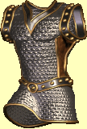 | Jméno: | Elfí krou¾ková zbroj |
| Zbroj: | +30 | |
| (uzdravení, rychlost +15, pøesnost +15, Elf) Pøed válkou proti lidem a goblinùm byly elfí zbroje jako tato bì¾nìj¹í. Staletí bojù spolu s upadajícím umìním plátnéøù sní¾ilo poèet zbrojí prakticky na nulu. Pou¾itím lehèích materiálù a stylem zpracování, které vyhovovalo pouze elfùm, poskytovala zbroj nositeli více volného pohybu a tím rychlej¹í a pøesnìj¹í výpady. | ||
| Cena: | 15000 | |
| 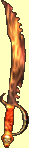 | Jméno: | Grognardùv tesák |
| Útok: | +6 | |
| Zranìní: | 3d4+6 | |
| (Zhouba elfù) Pozoruhodnì zpracovaná a okouzlená gobliní zbraò. I kdy¾ byla pùvodnì vytvoøena pro zabíjení elfù, splní skvìle své poslání i u jiných ras. | ||
| Cena: | 1000 | |
| 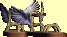 | Jméno: | Hermovy sandály |
| Zbroj: | +20 | |
| (Rychlost +100, Pøesnost +50, odolnost proti vzduchu +50, regenerace zdraví, regenerace many, Pád pírka) Tyto okøídlené sandály, o kterých se øíká, ¾e patøily bohùm, zaruèují svému majiteli obrovské schopnosti. | ||
| Cena: | 30000 | |
| Jméno: | Hrdinùv opasek | |
| (Mistr zbraní +5, síla +15, regenerace zdraví, Mu¾) Tento opasek navr¾ený pro svatého Perciho zaruèuje stateènost v boji, mimoøádnou sílu a regeneraci. Svatý Perci tohoto opasku hojnì u¾íval, ale ani s jeho pomocí se nemohl vyhnout smrti ve spárech draka Wromthraxe. | ||
| Cena: | 15000 | |
| 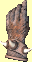 | Jméno: | Kováøské rukavice |
| Zbroj: | +10 | |
| (Odolnost proti ohni +30, síla +15, odolnost +15, Trpaslík) Kováøské rukavice vyrobil Mekorig pro své pomocníky. Rukavice jim mìly pomoci ve slu¾bì Mekorigovi. Rukavice, zvy¹ují u¾ tak skvìlou trpaslièí sílu a výdr¾, zaruèovaly mimoøádnou odolnost vùèi ohni, co¾ se u výhnì tak ¾havé, jako byla Mekorigova, urèitì hodilo. | ||
| Cena: | 15000 | |
| 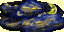 | Jméno: | Mìsíèní plá¹» |
| Zbroj: | +11 | |
| (magie temnoty) Zvy¹uje úèinnost kouzel magie temnoty. Tento plá¹» je výrazem nejvy¹¹í hodnosti dosa¾itelné Knìzi Mìsíce. Nebylo vyrobeno více ne¾ devìt takových plá¹»ù - jeden pro ka¾dého èlena rady Mìsíce. | ||
| Cena: | 2500 | |
| 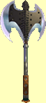 | Jméno: | Minotaurova sekyra |
| Útok: | +12 | |
| Zranìní: | 4d3+12 | |
| (síla +25) Skvìlá trofej! Aèkoli byla tato sekyra vyrobena pro minotaura a je velmi tì¾ká, magické síly, kterými je naplnìna, umo¾òují její pou¾ívání kýmkoliv. | ||
| Cena: | 2500 | |
| Jméno: | Oko mysli | |
| Zbroj: | +10 | |
| (Inteligence +15, osobnost +15, regenerace many, Èlovìk) Oko mysli vytvoøil Mekorig pro velkého druida Larette Weismana. Helma zesiluje intelekt i osobnost nositele, postupnì regeneruje jeho manu a slou¾í i jako ochrana hlavy. Bohu¾el, Oko mysli se hodí pouze na lidskou hlavu. | ||
| Cena: | 15000 | |
| 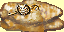 | Jméno: | Ovèí rouno |
| Zbroj: | +10 | |
| (Imunita vùèi nemoci, ¹ílenství, ochromení, usnutí a zkamenìní, inteligence -20 osobnost -20) Plá¹» nosili veleknì¾í øádu Baa. I navzdory jeho u¾iteènosti se v¹ak zdá, ¾e jeho nositelé pomalu vymizeli. | ||
| Cena: | 15000 | |
| Jméno: | Prsten ducha | |
| (magie ducha) Starý podivný prsten, který se zdá být na dotek neobvykle teplý. Zesiluje spojení nositele s duchem. | ||
| Cena: | 2500 | |
| 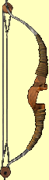 | Jméno: | Skvìlý luk |
| Støelba: | +12 | |
| Zranìní: | 5d2+12 | |
| Zdá se, ¾e luk sám odhalí støelcovu sílu a pøizpùsobí se jí. Nikdy se nemusí namáhat s nata¾ením tìtivy a bez problémù luk udr¾í¹ a¾ do chvíle výstøelu. Desítky drobných úprav, jako jsou tyto, èiní z luku to nejlep¹í, co jsi kdy vidìl. | ||
| Cena: | 4000 | |
| 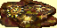 | Jméno: | Sluneèní plá¹» |
| Zbroj: | +11 | |
| (magie svìtla) Zvy¹uje úèinnost kouzel magie svìtla. Tento plá¹» je výrazem nejvy¹¹í hodnosti dosa¾itelné Knìzi Slunce. Nebylo vyrobeno více ne¾ devìt takových plá¹»ù - jeden pro ka¾dého èlena rady Slunce. | ||
| Cena: | 2500 | |
| Jméno: | Stínová maska | |
| Zbroj: | +12 | |
| (Kradení +3, odstranìní pastí +3) Maska urèená k ukrytí nositelovy toto¾nosti. Je zároveò okouzlena, aby poskytovala dobrou ochranu a pomáhala zlodìjským snahám. | ||
| Cena: | 2000 | |
| 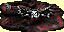 | Jméno: | Upíøí plá¹tìnka |
| Zbroj: | +9 | |
| (+10 inteligence a ¹tìstí) Tuto plá¹tìnku, kterou lze najít u upírù, lze pova¾ovat za malý zázrak. Chrání tìlo upíra pøed sluneèními paprsky, ale jeho tváø uchránit nedoká¾e. | ||
| Cena: | 2500 | |
Upíøí plá¹tìnka je vcelku zajímavý pøedmìt, který je v¹ak popsán nejspí¹e jen v datových souborech. V samotné høe se mi její existenci prokázat nepodaøilo (tedy vyjma domnìnky, ¾e jsem jí kdysi v jedné z her opravdu získal, co¾ u¾ ale nemám jak dolo¾it). Datové soubory se na jednom z míst zmiòují i o jisté opravì, kdy byl ze hry odstranìn Pán upírù. Dle mého názoru se tato postava mìla nacházet ve Vinném sklípku v Tatalii a mìla být ozdobena právì tímto plá¹tìm. Díky jeho neexistenci se pak tato plá¹tìnka stala nedostupnou.
 |
Jméno: | Vílí prsten |
| (magie vzduchu) Vzácný a velmi mocný prsten vyrobený vílami. Nìco podobného vidìla jen hrstka smrtelníkù! | ||
| Cena: | 2500 | |
| 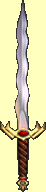 | Jméno: | Zhouba elfù |
| Útok: | +12 | |
| Zranìní: | 4d6+12 | |
| (Krytí, Zhouba elfù, Goblin) Tento meè vyrobili goblini pro svého vùdce Grognara. Bohu¾el, goblini válku prohráli a meè se na nìjaký èas ztratil. Meè, který je okouzlen, aby rozséval zkázu mezi elfy a chránil svého vlastníka pøed ¹ípy, dìlá skuteènì èest svému jménu. Zvlá¹tní vedlej¹í úèinek zpùsobuje, ¾e meè nemù¾e pou¾ít nikdo jiný ne¾ goblin. | ||
| Cena: | 15000 | |
| 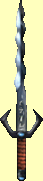 | Jméno: | Zloduchùv meè |
| Útok: | +12 | |
| Zranìní: | 3d4+12 | |
| Vysává ¾ivoty z protivníka. Tímto meèem èasto popravoval William Setag své vìznì, èím¾ hojil svá drobná poranìní. Zbraò je na dotek chladná a v ruce se nepatrnì chvìje. | ||
| Cena: | 2000 | |
| 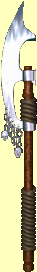 | Jméno: | Zokarrova sekyra |
| Útok: | +13 | |
| Zranìní: | 3d7+13 | |
| (+10 Tøída zbroje, odolnost a zdraví) Zbraò dìdìná v Zokarrovì dynastii z otce na syna. Tato sekyra poskytuje svému dr¾iteli velké spøíznìní s magií zemì. | ||
| Cena: | 2500 | |
| 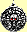 | Jméno: | Zrcadlo medúzy |
| Nositel tohoto amuletu je zcela imunní vùèi zkamenìní. Bylo by pøíjemné získat ho o nìco døíve. | ||
| Cena: | 5000 | |
copyright 2002 - 2022 by Petr 'Elemir' Levák v¹echna práva vyhrazena